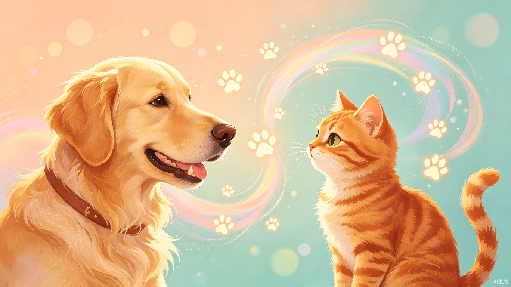
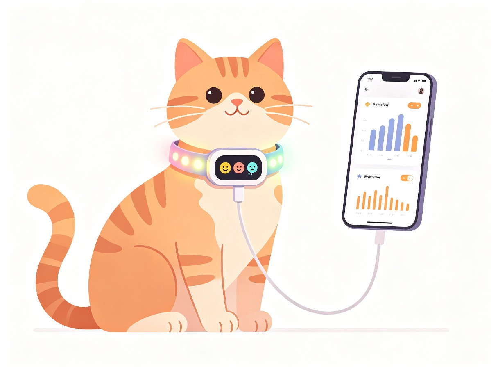

🎙️
麦克风阵列
叫声频率采集

宠物行为解码与智能陪伴系统
用AI搭建跨越物种的沟通桥梁
Contents · 目录
人宠沟通障碍的真实困境
25-40岁城市养宠人群
智能硬件 + 手机App的软硬结合系统
多模态AI + 行为解码 + 健康预警
千亿宠物市场 + 三级盈利模型
效率提升 · 商业价值 · 社会意义
Part · 01
当宠物无法用语言表达时，主人那种想给予关怀却无从下手的无力感
Why · 灵感
我们身边的养宠朋友常常这样说——
宠物情绪变化微妙，主人只能靠猜测，经常误解宠物行为，错过最佳互动时机。
主人外出时无法获知宠物心理状态，缺乏远程安抚手段，导致人宠关系紧张。
宠物活动模式或叫声频率出现异常时，主人往往等到出现严重症状才察觉。
Part · 02
25-40岁城市养宠人群，将宠物视为家庭成员
Who · 核心用户
Part · 03
智能项圈 + 手机App，AI驱动的软硬结合系统

Product · 产品形态
专属宠物智能硬件佩戴在宠物身上，实时采集叫声频率、运动姿态与生理数据，通过多模态AI模型解码行为与情绪，在手机App上呈现直观的行为翻译与情绪报告。
Features · 核心功能
AI实时分析叫声频率与运动姿态，将宠物行为翻译为人可理解的情绪描述
直观展示宠物的开心指数、焦虑指数、活跃指数等维度，数据化解读心理状态
当活动模式或叫声频率出现异常波动时，及时提醒主人关注潜在健康问题
外出时远程查看宠物状态，通过App发起互动安抚，缓解分离焦虑
Part · 04
多模态AI + 物联网传感 + 动物行为学模型
Architecture · 系统架构
叫声频率采集
运动姿态追踪
心率/体温监测
活动范围追踪
声纹 + 姿态 + 生理
猫/狗专用模型
7维情绪输出
本地实时处理
实时面板 + 报告
行为异常预警
咨询对接服务
周报/月报订阅
Pipeline · 数据流
叫声、动作、心率
麦克风+IMU+传感
行为学+深度学习
7维情绪+行为标签
翻译+预警+报告
Part · 05
千亿级宠物市场的"智能养宠"细分蓝海
Market · 市场规模
Revenue · 商业模式
智能项圈/胸背带的一次性销售收入，是用户进入生态的入口，定价399-699元
月度/年度行为分析订阅服务，提供深度洞察、趋势分析和个性化建议
对接专业兽医和训犬师平台，基于AI行为分析精准匹配需求，收取服务佣金
Comparison · 对比
Part · 06
效率提升 · 商业价值 · 社会意义
Impact · 三重价值
将宠物行为观察从"主观猜测"升级为"数据化解读"。AI实时分析运动姿态、叫声频率与生理数据，将传统需要数天观察才能发现的异常缩短至几分钟内预警。
切入千亿级宠物市场的"智能养宠"细分蓝海。硬件销售+高级行为分析报告订阅+在线兽医/训犬师咨询抽佣，三级盈利模型构建高用户粘性和复购潜力。
减少因行为误解导致的宠物弃养现象，促进人与动物和谐共处，提升城市宠物福利水平，让每一只宠物都能被理解、被善待。
Roadmap · 发展路线
完成智能项圈原型机 + 基础App，聚焦叫声识别与基础情绪分类，在100个种子用户家庭中测试
加入IMU运动姿态分析、生理传感、远程安抚功能，上线行为分析报告订阅服务
对接在线兽医与训犬师平台，开放API接入第三方宠物服务，建立宠物行为数据库
用AI搭建跨越物种的沟通桥梁
让每一只宠物都被理解、被善待